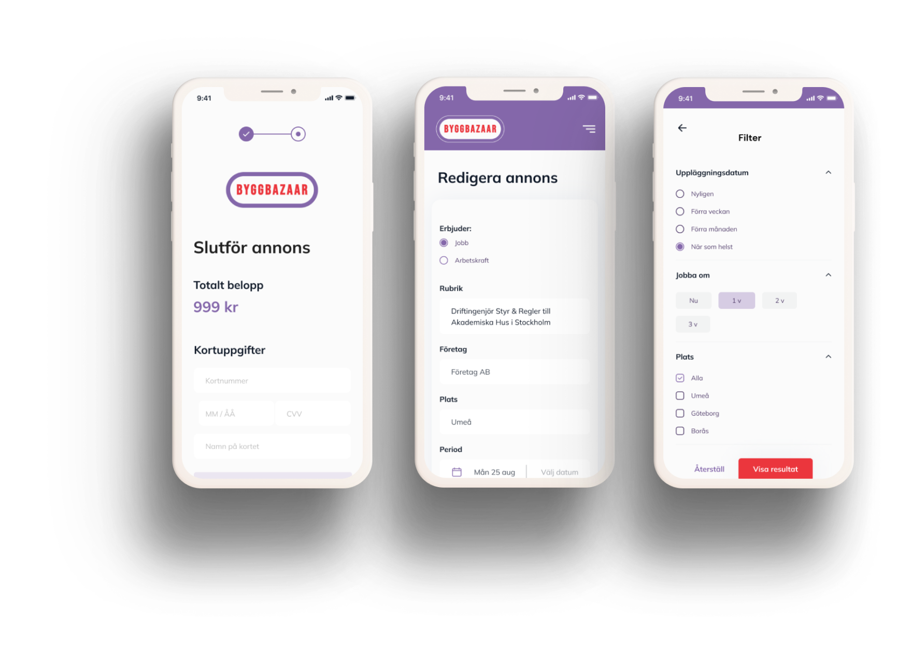

Byggbazar
Client
H&W Innovation
Role
UX/UI Design
Tools
Figma, Illustrator, Miro
DEFINING THE PROBLEM
Finding professionals who are suitable for a job is not easy, especially not for construction companies. Byggbazar is a website that provides a platform for construction companies to easily find and offer jobs to qualified professionals. Whether you are looking for architects, engineers, contractors, or any other construction-related professionals, Byggbazar makes it easy for people to connect with the right people for the right job.
UNDERSTANDING THE USERS
LABOUR
Sign in. Edit profile. Create ads for offering labour. Search for work. Priceplan.
HIRE
Sign in. Edit profile. Create ads for offering jobs. Search for labour. Priceplan.

IDEATION
During the ideation part of the design process, generating new ideas and possible solutions was done based on the information from the previous steps, such as user research and analysis of the problem. Brainstorming and sketching were used as techniques to encourage creativity and explore different ideas. The ideas generated were evaluated against the requirements and user needs, considering factors such as feasibility, usability, and desirability.
After evaluating the ideas, the most promising ones were selected and refined into a Lo-Fi prototype. The Lo-Fi prototype includes wireframes that represent the basic structure and functionality of the design.
FINAL SOLUTION
Based on valuable feedback from both the client and colleagues a hi-fi prototype was designed and developed.
WHAT I LEARNED
This project was an excellent opportunity for me to enhance my skills in iterative prototyping, teamwork, and client meetings. Throughout the development process, I worked closely with my team to iterate the prototype based on feedback received from both the client and end-users. I learned to embrace and leverage the iterative process to create a product that met the needs and expectations of all stakeholders. Additionally, I developed effective teamwork skills, collaborating with my colleagues to deliver the best possible outcomes. Finally, the experience of engaging in client meetings and managing their feedback was invaluable, as it allowed me to develop critical communication.